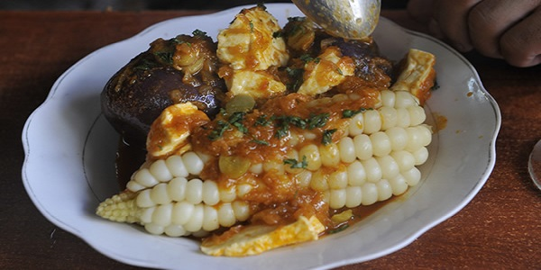

Queso Humacha (Queso En Salsa Picante)
Este plato tiene como ingredientes al queso, al ají amarillo, al choclo y a la papa pureja. Se sirven dos o tres papas en un plato plano y se lo decora servido con abundante queso derretido.
Ingredientes
- 3/4 litros de leche
- 2 papas harinosas grandes hechas puré
- 1/2 litro de agua
- 1 kilo queso fresco en rallas
- 1 1/2 taza de habas frescas
- 1 1/2 taza de arvejas frescas
- 1 1/2 taza de cebolla picada
- 1 1 /2 taza de tomate picado
- 1/2 taza de aceite para dorar ají y cebolla
- 1 1/2 cucharadas de ají amarillo molido
- 1 cucharada de perejil picado
- 1 cucharada de quirquiña (muy similar al cilantro o la rúcula)
- 1 cucharada de comino
Preparación
- Tome una sartén y dore el aceite, ají y cebolla.
- Incorpore el tomate licuado, las habas, arvejas, perejil, comino, orégano, quirquiña y agua hirviendo.
- Deje al fuego hasta que las arvejas estén tiernas
- En una olla aparte ponga a cocer las papas con cáscara, hasta que se puedan pelar con facilidad.
- Escurra el agua y deje enfriar.
- Pelar las papas y juntarlas a la salsa, añadir la leche y el queso picado.
- Remover con cuidado de no deshacer las papas y el queso.